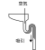

2023年
問題106 給水及び排水の管理に関する用語とその説明との組合せとして，最も不適当なものは次のうちどれか．
（1）バルキング 排水槽の底部に沈殿した固形物や油脂等が集まったもの
（2）自己サイホン作用 排水が器具排水管内を満流で流れるときに，サイホンの原理によってトラップ内の封水が引かれ，残留封水が少なくなる現象
（3）クロスコネクション 上水(飲料水)系統と他の配管系統を配管や装置により直接接続すること
（4）オフセット 排水立て管の配管経路を平行移動するために，エルボ又はベンド継手で構成されている移行部分のこと
（5）ポンプのインバータ制御 周波数を変えることでモータの回転数を変化させる，送水量の制御方法
2023年
問題106 正解（1） 頻出度AAA
バルキング（Bulking 膨化）とは，活性汚泥の単位重量当たりの体積が増加して，沈降しにくくなる現象をいう．
バルキングが著しくなると，沈殿槽において固液分離が困難となり，上澄水が得られず処理水質が悪化する．
汚泥容量指標（SVI）※が，沈降性が良好な活性汚泥では50～150，バルキング状態では200以上になる．
※ SVI：活性汚泥の「沈みやすさ」を示す指標．MLSS（汚泥濃度）に対するSV30（30分沈殿率）の割合で，1gの汚泥が占める容積（mL/g）を表す．
排水槽の底部に沈殿した固形物や油脂等は「汚泥」になる．
-(2) トラップの自己サイホン作用による破封は2023-106-1図参照．

自己サイホン作用による破封を防ぐには，各個通気管を設置する．
-(3) クロスコネクションは給水の汚染を招くので禁止されている．
クロスコネクションの例：給水系統と屋内消火栓の系統を，逆止弁を介して接続（2023-106-1 図参照）．消火用水槽で吐水口空間を設けて給水するのが正しい（2023-106-2 図参照）．
2023-106-1図 消火管とのクロスコネクション
2023-106-2図 消火管への補給水管


-(4) 排水立て管のオフセット2023-106-2図参照．
-(5) インバータによる，ポンプなどを駆動するモータ（交流誘導電動機）の回転数制御をVVVF※制御という．
※ VVVF：Variable Voltage Variable Frequency（可変電圧可変周波数）